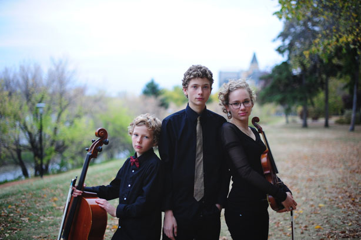

The Caspian Trio
"They sound like pizza in the dishwasher, and dish soap in the oven" -- New York Times
The Caspian Trio is a wonderful ensemble that plays some of the best classical compositions at concerts, weddings, and other events. Simone, Godwin and Amos Friesen are three great collaborative musicians that are so in tune and in sync with each other, you might think they're psychic. The real reason is that they are all siblings!